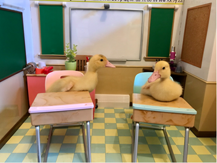
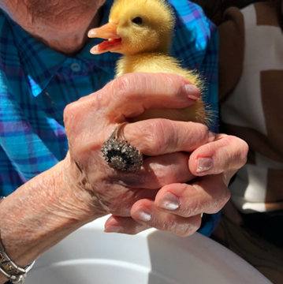

Fostering Ducklings & Bunnies


|
Fostering  Scroll down for Fostering Bunny information
Scroll down for Fostering Bunny informationFostering Ducklings Joy and giggles, laughter and squeals of delight. These are the typical reaction as families get their just-hatched ducklings at our farm. Long Term Care Homes and teachers love the low-stress having day old ducklings without the wait to hatch themselves.Our Farm in Lakehurst, Ontario is the location for pick-ups and returns for this program. Delivery and returns are available for a fee – please enquire by email. We have been running this program for more than 10 years. With the returning ducks, comes stories of how caring for ducklings brings together science and nature studies, empathy and nurturing, socializing and imprinting, compassion, caring and love.
You will select from
2 or more incubator-hatched ducklings for your kit. We provide everything you will need for one, two, three or more weeks. When can I get the ducklings?  In the We have developed non-contact procedures during Covid. After you place your order, you will get an auto-email with detailed information on accessing our farm as well as the contract for this program and health information. Use our on-line booking under the blue FOSTER link, then select the start date that works best for you. In the We have developed non-contact procedures during Covid. After you place your order, you will get an auto-email with detailed information on accessing our farm as well as the contract for this program and health information. Use our on-line booking under the blue FOSTER link, then select the start date that works best for you.From July to March, the ducklings are usually Pekins; yellow-coloured as ducklings with tiny peeps growing into white ducks with orange beaks and legs. Each spring you will be able to specify and reserve miniature Call Ducks (April to June). These ducklings will start tiny, grow slower and stay smaller than a standard duck. They can fly at 8 to 10 weeks old. With our own eggs, you may get standard sized ducks in different colours and shapes from the long necked Indian Runners, crested ducks with tufts on top or all black Cayugas. We don’t foster baby chickens (chicks) as they will develop the wings early and begin to flutter and fly at 10 days old. You can experience chicks through our hatching program – 21 days from chick eggs into the incubator to hatching day. You can keep them 11 days longer before the base kit is due back to the farm. Ducklings develop their bodies first, will stay on the ground, swim and bond/imprint on you. They also will adapt back to being a farm duck when they are returned to the farm. And return they must. ALL DUCKLINGS AND CHICKS must be returned to Woolley Wonderland farm per our contract with you. To prepare for duckling pickup:  You will need a plastic bin / tote or rabbit cage. You can find something larger if/when they outgrow your first choice. Provide a safe draft-free area, away from pets. Ducklings require warmth for the first 2 weeks. They can go outside on nice sunny days or rainy ducky days of spring and summer. No matter if they are on land or in water, ducks must always be supervised by a responsible person. Even a quick bathroom break for a human, with ducks left alone outside, can result in predator death. We suggest a heat lamp or a desk lamp with an old-fashioned incandescent bulb for warmth. Don't have one? We have heat lamps, totes and cages for rent with your base kit for an additional fee. | |||
We supply  Your duck kit includes: a pair or more of just-hatched baby ducklings, food + food dish, water dish, vitamin supplement, shavings for bedding and our comprehensive manual. We also have totes, cages and heat lamps for rent if you are in need of these items. The ducks will double in size over the first week and again in the second week. Honestly! They start out smaller than your closed fist, and grow to the size of a mini-football in less than three weeks.
Your duck kit includes: a pair or more of just-hatched baby ducklings, food + food dish, water dish, vitamin supplement, shavings for bedding and our comprehensive manual. We also have totes, cages and heat lamps for rent if you are in need of these items. The ducks will double in size over the first week and again in the second week. Honestly! They start out smaller than your closed fist, and grow to the size of a mini-football in less than three weeks.Don’t worry about your ducklings missing their mama. Ducks are hatched in an incubator and should imprint on you, their foster parents - following you around. Did you know that ducklings can swim by instinct the day they hatch and that they love scrambled eggs for breakfast? When you're done... Keep the ducklings as long as it works for you: 2 weeks - 3 months ... or anything in-between. All ducklings/ducks must be returned to the farm to wrap-up per your contract. You are done when the duckies are too big, too loud or too smelly for you. This is a short-term program that parents appreciate as the family enjoys the quick growth and know there is a definitive end to the farm animal living at home. Click here for info with our Foster Duckling FAQ. We are a livestock producer and sell many of our breeding animals/ducks/chickens to farm clients. Remember to check your by-laws. Many communities do not allow farm animals in the city limits. If you choose to participate, you do so on with full responsibility. Our contract with you has the ducks returning to us in a healthy state when you follow our directions and guidelines. Failure to do so may result in fees to offset our losses. Please click here to make a booking. Winter ducklings hatch twice month on with bookings required well in advance. Your pick-up time will be by appointment, usually on a weekend. Spring and summer have weekly hatch dates. Hatching this is a link page for more information. Hatching duck or chicken eggs at your home or school is fun too! You can book a complete incubator kit. Click on the. hatching page for more information. Hatching Eggs at your home or school is fun too! You can book a complete incubator kit. Click on the Hatching page for more information.  Seniors and Long-Term Care We continue to book our Foster Duck program at retirement homes, long-term care facilities and Community Care centres. We offer non-contact drop-off and returns or we can come in to help you set up for your time with our Critters. Your residents and guests can gather for special swim times and they love to watch the ducklings grow so fast. Don’t hesitate to contact us directly to discuss this, and other programming opportunities we can customize. For locations not yet receiving external programming, you can ZOOM with us! Click here for information on how we can visit with you virtually Foster Bunnies If you want to test the waters before jumping into pet ownership, this program is for you. The popularity of this program attests to the desire of families wanting to take the time to see if a rabbit a perfect pet at this time. Many of our clients have never owned a pet before! Pets are a long-term commitment, with some rabbits living more than 15 years.Critter Visits is offering several breeds of rabbits for fostering before you adopt! Let your family see if this is the right pet for right now with a month's trial following your family's current routine. Discover if the kiddos change the litter? Play daily? Brush the Fur? Feed and fill the water bottle? Find out if bunny gets enough attention after three weeks? If after a month you are still not sure, you can extend for one more month before making a final decision. Often, a family knows the answer before the month is over.  We supply you and select a buck or doe, the colour they like and usually the breed they were hoping for. We do ask that you try not to focus on one particular breed – sometimes the right pet match will surprise you.
We supply you and select a buck or doe, the colour they like and usually the breed they were hoping for. We do ask that you try not to focus on one particular breed – sometimes the right pet match will surprise you.We will assist in taking the bunny out of the cage and letting you hold one or two. We want to be sure bunny starts as good fit and you begin to feel comfortable holding and picking up your new furry friend. We are a call away during your foster period to help you with any questions. Our current breeds are: Lionhead, Mini Rex (the velveteen bunny), Holland Lop and Netherland Dwarf (tiny ears). Ages are from a few months and up to 2 years old. Colours include broken back (spotted), otter (light on bottom and dark on top), harlequin (like a calico cat tri coloured), black, white, brown and lavender (grey). You will be able to select from our complete group when you come to the farm by appointment. Fees: Foster prices are $175 for one bunny or $225 for two bunnies for up to one month. A second month extension is $75 per bunny. Buy-out of bunnies start at $100. While we offer fostering and purchase opportunities all year around, we do not allow the purchase of bunnies for the holidays of Christmas and Easter . We want to be sure that they don't end up in a shelter from an impulse purchase. Book online and we can work to set an appointment that works for you at our farm. |